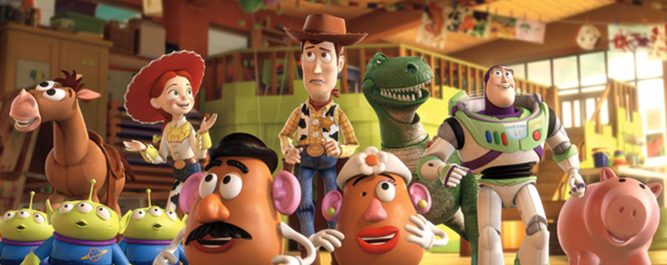
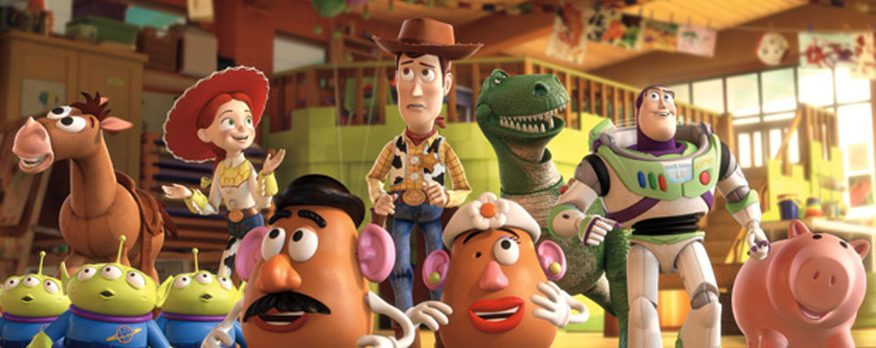

Research on Astrophysics
Research in Astrophysics covers theory, observation, and instrumentation, with investigations focused on exoplanets, brown dwarfs, the formation of planets, stars, and galaxies, the evolution of stars and gas in the universe, and large-scale surveys.Studies include numerical simulations of planet, star, and galaxy formation; observational work on explosions and shells of novae, and cataclysmic variables in nearby galaxies and globular clusters; surveys for massive star pre-supernovae (Wolf-Rayet stars) throughout the Milky Way; and the development of new techniques to study the solar-system scale environs of nearby stars, including direct observations of exoplanets and nascent solar systems.
Project 1640 conducts remote reconnaissance of planetary systems around stars other than the Sun.Specifically it is designed to image planets orbiting nearby stars and to acquire low-resolution spectra of them simultaneously. It is currently the most advanced and highest contrast imaging system in the world and was successfully installed at the Palomar 200-inch telescope July 2008, with a major upgrade and additional control systems added by June 2012."/>< The project involves optical instrumentation, built at the AMNH, Cambridge University's Institute of Astronomy, the Jet Propulsion Laboratory and Caltech
Observations at Palomar are on-going for a 3-year survey of some 200 nearby stars to find any type of object orbiting them. The primary goal is comparative spectroscopy of young, warm giant planets around these stars, to understand the range of planets extant, and how they form and evolve.